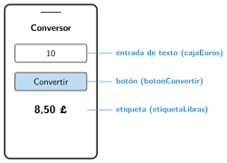

Crear una aplicación sencilla con App Lab
🤔 Pienso5 min
Qué hago aquí: Piensa un momento y contesta con lo que ya sabes. No pasa nada si no lo sabes: es para empezar.
Vas a hacer una aplicación que cambia euros a libras. Dibuja su pantalla. ¿Qué necesita?
📖 Leo y aprendo15 min
Qué hago aquí: Lee despacio, mira los dibujos y los ejemplos, y quédate con la idea clave del final.
Una aplicación tiene dos partes: lo que se ve, la interfaz, y lo que hace, el código.

Cinco bloques bastan para casi todo:
onEvent: responder a un clic.getText: leer lo que ha escrito el usuario.setText: cambiar un texto.setProperty: cambiar un color o un tamaño.setScreen: cambiar de pantalla.
✏️ Hago25 min
Qué hago aquí: Haz las actividades en orden. Empieza siempre por las básicas.
Une cada elemento con lo que hace.
| Botón • | • Muestra un texto |
| Etiqueta • | • Para escribir |
| Entrada de texto • | • Para hacer clic |
¿Qué bloque usas para leer lo que escribe el usuario? ¿Y para cambiar de pantalla?
Haz en App Lab la pantalla del conversor, con los tres elementos y sus id.
Programa el conversor. Pruébalo con 10 euros. ¿Cuántas libras salen?
Añade una pantalla de inicio con el nombre de la aplicación y un botón «Empezar». Pide a un compañero que la pruebe. Anota una mejora que te diga.
✏️ Puedes responder escribiendo, con un dibujo o un esquema, o contándolo en voz alta.
🚀 Amplío (si quieres saber más)
Qué hago aquí: ¿Has terminado? Lee la curiosidad o elige el reto. Es voluntario.
Añade un desplegable para elegir la moneda: libras, dólares o yenes. Usa una decisión múltiple para hacer cada cambio.
✅ Compruebo5 min
Qué hago aquí: Contesta sin mirar la ficha y marca cómo lo llevas.